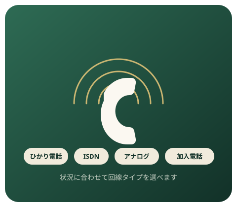
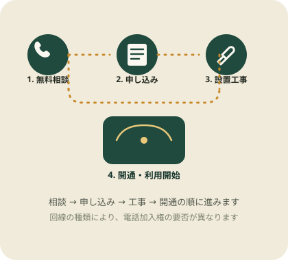

開業・移転をひかえる店舗＆事務所向け
電話加入権や工事の不安を、
申し込み前に整理してから始める。
「今すぐ固定電話番号がほしいけれど、電話加入権や工事費がどのくらいかかるのか分からない」—— そんな開業前・移転前の悩みに向けて、電話加入権ドットコム（運営：株式会社ビジョン）の 固定電話開通サービスを、料金の考え方や申し込みの流れとあわせて紹介します。
※本ページはPRを含みます。相談・お申し込みは提携先の公式サイトで行われます。

こんな悩み、ありませんか？
固定電話の準備は、
意外と後回しになりがちです。
開業の準備で手一杯で、固定電話の申し込みだけがずっと後回しになっている
電話加入権や工事費がいくらかかるのか、そもそもの仕組みがよく分からない
携帯番号だけだと、取引先や顧客からの信用面で少し不安が残る
複数拠点・複数回線をまとめて手配したいが、どこに相談すればいいか分からない

サービス概要
「固定電話加入権ドットコム」とは
固定電話加入権ドットコムは、株式会社ビジョン（1995年設立）が運営する固定電話の新規開通・相談窓口です。 電気通信事業の届出（届出番号：A-15-5666）を行っている事業者で、ひかり電話・ISDN回線・アナログ回線・従来の加入電話まで、 複数の回線タイプの中から状況に合った選択肢を相談できるのが特徴です。
相談・見積もりは電話窓口（0120-599-041）で24時間365日受け付けているとされており、開業前や移転前で 「まず話だけ聞いてみたい」という段階でも利用しやすい窓口です。
こんな方に向いています
公式サイトで案内されている主な対象者
これから店舗を開業する方で、営業開始までに固定電話を用意したい
オフィスの移転・増床にあわせて複数回線をまとめて手配したい企業
創業したばかりで、まずは固定電話を1回線から用意したいスタートアップ
費用を抑えつつ、自宅や事務所に固定電話を持ちたい個人・個人事業主
※上記は公式サイトの案内内容にもとづく一般的な対象者像です。ご自身の状況で利用可能かどうかは、無料相談で個別にご確認ください。
主な特徴
相談できる回線・サービスの内容
回線タイプを選んで相談できる
ひかり電話・ISDN回線・アナログ回線・従来の加入電話まで、利用状況にあわせて選択肢を比較できます。
電話番号の候補から選べる
申し込み時に複数の電話番号候補が案内され、その中から希望の番号を選ぶ流れになっています。
初期費用の負担を抑える案内も
条件を満たす場合、電話加入権の取得や初期工事費の負担を抑えられるキャンペーンが案内されることがあります（適用条件は要確認）。
24時間365日の相談窓口
電話（0120-599-041）での無料相談・見積もりを24時間365日受け付けているとされています。
選ぶ理由
運営会社の信頼性について
運営会社
株式会社ビジョン
1995年設立の電気通信事業者
届出・許可
電気通信事業届出済
届出番号：A-15-5666
相談受付
24時間365日
電話・公式サイトから相談可能
※上記は公式サイトに記載の情報にもとづきます（2026年9月時点）。最新の情報は必ず公式サイトでご確認ください。
申し込み前に知っておきたいこと
料金・条件に関する注意点
- 月額料金・通話料・初期費用は、回線の種類（ひかり電話／ISDN／アナログ／加入電話）や利用状況によって異なります。正確な金額は必ず無料相談・公式サイトでご確認ください。
- 電話加入権の要否は回線タイプによって異なります。加入権が必要な回線を選ぶ場合は、取得方法や費用についても事前に確認しておくと安心です。
- 初期費用を抑えられるキャンペーンには、適用条件（回線種別・エリア・契約内容など）が設定されている場合があります。
- 提供エリアや設置環境によっては、希望どおりの回線・工期に対応できない場合があります。
- 本サービスの収益や割引内容を保証するものではありません。契約前に必ず公式の説明・見積もりをご確認ください。
申し込みの流れ
相談から開通までのステップ
- 1
無料相談・お問い合わせ
電話またはウェブから、現在の状況や希望する回線タイプを相談します。
- 2
プランの案内・お申し込み
相談内容にあわせてプランが案内され、内容に納得できれば申し込みに進みます。
- 3
電話番号の選択
候補となる電話番号の中から、希望の番号を選びます。
- 4
工事日程の調整
設置工事の日時を調整します。工事は1件あたり30〜60分程度が目安とされています。
- 5
開通・利用開始
設置後、電話機の接続や設定を行い、利用を開始します。
よくある質問
申し込み前によくある疑問
回線の種類や工事内容によって異なりますが、公式サイトでは相談・申し込みから電話番号の確保、工事は1件あたり30〜60分程度が目安として案内されています。正確な日数はお住まい・お店の状況により変わるため、無料相談でご確認ください。
回線の種類によって異なります。ひかり電話などは電話加入権が不要な場合がある一方、加入電話（従来の固定電話）は電話加入権が必要になることがあります。条件を満たすと初期費用や加入権取得の負担を抑えられるキャンペーンが用意されている場合もあるため、詳細は無料相談でご確認ください。
ひかり電話・ISDN・アナログ回線・加入電話など、選ぶ回線の種類によって月額料金や通話料の体系が異なります。正確な料金は回線種別・地域・利用条件によって変わるため、公式サイトまたは無料相談でお見積もりを確認することをおすすめします。
公式サイトのFAQではFAX対応についての案内があります。回線の種類によって対応状況が異なるため、FAXの利用を予定している場合は申し込み前に相談窓口で対応可否を確認してください。
公式サイトには移転手続きに関する案内があります。既存の電話番号を引き継げるかどうかは回線の種類や移転先の状況によって異なるため、移転を検討している場合は早めに相談することをおすすめします。
固定電話の準備、相談だけでも始めてみませんか。
回線の種類や費用の考え方は状況によって変わります。まずは無料相談で、ご自身の場合の選択肢を確認してみてください。
公式サイトで無料相談・お見積もり※本ページはPRを含みます。申し込み・契約は提携先の公式サイト上で行われます。